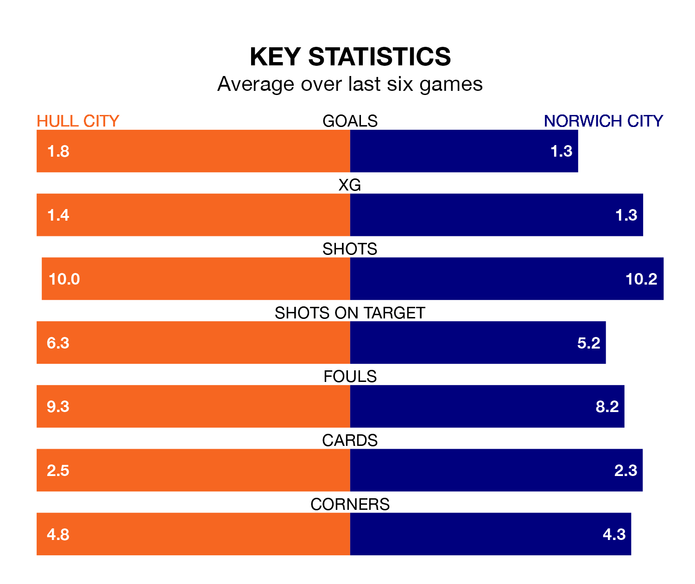

Hull City host Norwich City on Friday at the MKM Stadium in the Championship.
In their last league match, on January 1, Hull lost to Sheffield Wednesday 3-1 away, with their goal scored by Scott Twine.
Norwich drew, 1-1 at home against Southampton, with Joshua Sargent scoring their goals.
With 42 goals in 26 games so far this season, Norwich are scoring more than average in the league with 1.6 goals per game. But they are conceding more than average too, letting in 42 goals at a rate of 1.6 per game.
Hull are also above average scorers, with 1.5 goals per game, compared to a league average of 1.4. They have conceded 1.4 goals per game.
In the last 10 years, Hull and Norwich have played each other on eight occasions. Hull won two of them, Norwich four, and they drew twice.
On average, the Tigers scored 1.4 goals and the Canaries 1.8 in those matches.
Their last meeting was on August 5, when Norwich won 2-1 at home.
Hull City are seventh in the table after 26 games, of which they have won 11 and drawn six, earning 39 points.
Norwich City are six places behind the Tigers in 13th, with 10 wins and five draws putting them on 35 points.
In Jon Rowe, the Canaries have one of the league's sharpest shooters so far this season. He has notched 10 goals in 24 appearances, to sit sixth in the scoring charts.
His goal rate of one every 166 minutes is slightly quicker than that of Aaron Anthony Connolly, the hosts' top scorer with a goal every 142 minutes, and a total of eight goals in 23 games.
Hull are in mixed form in the Championship, with three wins and three losses from their last six games.
With two wins and two draws over that period, the away side's form is slightly worse – they have taken eight points from 18, compared to Hull's nine.
Updated: 15:34, 08/01/24